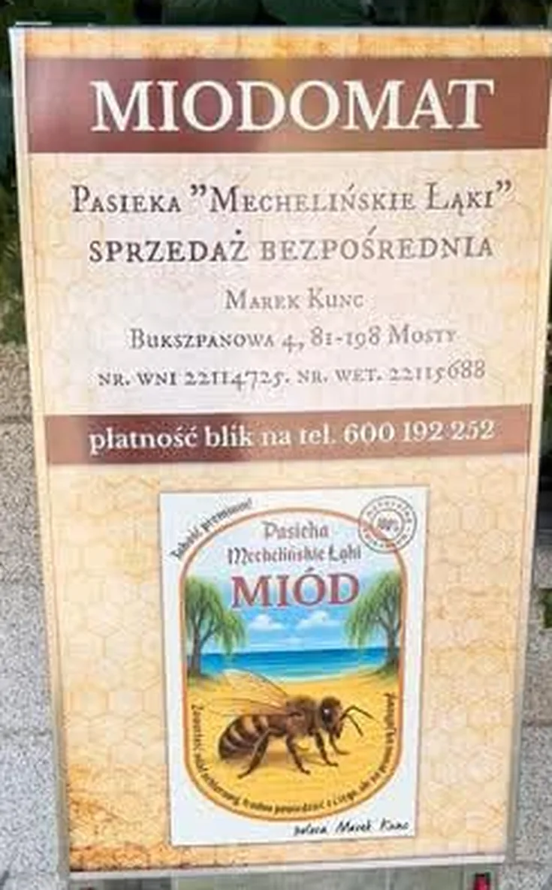

Strona główna — Miodomat w Mostach
Miodomat w Mostach
Automat z miodem przy Bukszpanowej 4. Bierzesz słoik, płacisz BLIK-iem na 600 192 252 i jedziesz dalej.

Co to jest miodomat
To niewielki automat sprzedający — taki, jakie stoją przy gospodarstwach z jajkami czy mlekiem — tyle że w środku są słoiki miodu prosto z mojej pasieki. Stoi przy posesji, więc nie musisz się ze mną umawiać ani czekać, aż wrócę z pola.
W szufladzie leżą gotowe słoiki z etykietą i ręcznie dopisaną odmianą. Wybierasz, płacisz BLIK-iem na mój numer i zabierasz. Cała transakcja trwa minutę i nie wymaga kontaktu ze mną — choć jeśli akurat jestem w domu, chętnie porozmawiam o pszczołach.
To sprzedaż bezpośrednia zarejestrowana u powiatowego lekarza weterynarii: numery WNI i WET z tabliczki to dokładnie ten sam wpis, który pozwala mi sprzedawać miód na jarmarkach.
Jak kupić miód z automatu
Trzy kroki, bez aplikacji i bez rejestracji.
Wybierz słoik
Zajrzyj do szuflady i sprawdź etykietę — na każdej jest ręcznie dopisana odmiana i gramatura.
Zapłać BLIK-iem
Przelew na telefon: 600 192 252. W tytule wpisz, co bierzesz, np. „gryka 900 g”.
Zabierz miód
Wyjmij słoik i zamknij szufladę. Potwierdzenie przelewu zostaje na Twoim telefonie.
Płatność BLIK na telefon
Przelew na numer telefonu w aplikacji Twojego banku. Bez prowizji, bez terminala.
Nie masz BLIK-a? Zadzwoń pod ten sam numer — dogadamy się na miejscu.

Gdzie stoi automat
- AdresBukszpanowa 4, 81-198 Mosty (gmina Kosakowo)
- SprzedawcaMarek Kunc, Pasieka „Mechelińskie Łąki”
- PłatnośćBLIK na telefon 600 192 252
- Nr WNI22114725
- Nr WET22115688
Częste pytania
Skąd wiem, jaki miód jest w środku?
Odmiana jest dopisana ręcznie na etykiecie każdego słoika. Jeśli zależy Ci na konkretnej — zadzwoń przed przyjazdem, powiem, co akurat stoi w automacie.
Czy miód w automacie się nie zepsuje?
Miód jest produktem, który nie psuje się latami — potrzebuje tylko zamkniętego słoika i braku wilgoci. W automacie stoi w cieniu i w stałej temperaturze.
Dlaczego miód w słoiku jest gęsty albo ziarnisty?
Bo krystalizuje, czyli zachowuje się tak, jak powinien naturalny, niepodgrzewany miód. Wystarczy podgrzać słoik w ciepłej wodzie, nie przekraczając 40 °C.
Mogę kupić większą ilość, na prezenty albo do firmy?
Tak, ale wtedy lepiej wcześniej zadzwonić — do automatu wkładam bieżący zapas, a większe zamówienie przygotuję osobno.
Czy dostanę paragon?
Przy sprzedaży bezpośredniej potwierdzeniem jest przelew BLIK w Twojej aplikacji. Jeśli potrzebujesz dokumentu do firmy, napisz lub zadzwoń.